To Toyosu


ヴ・ミン・チュン
 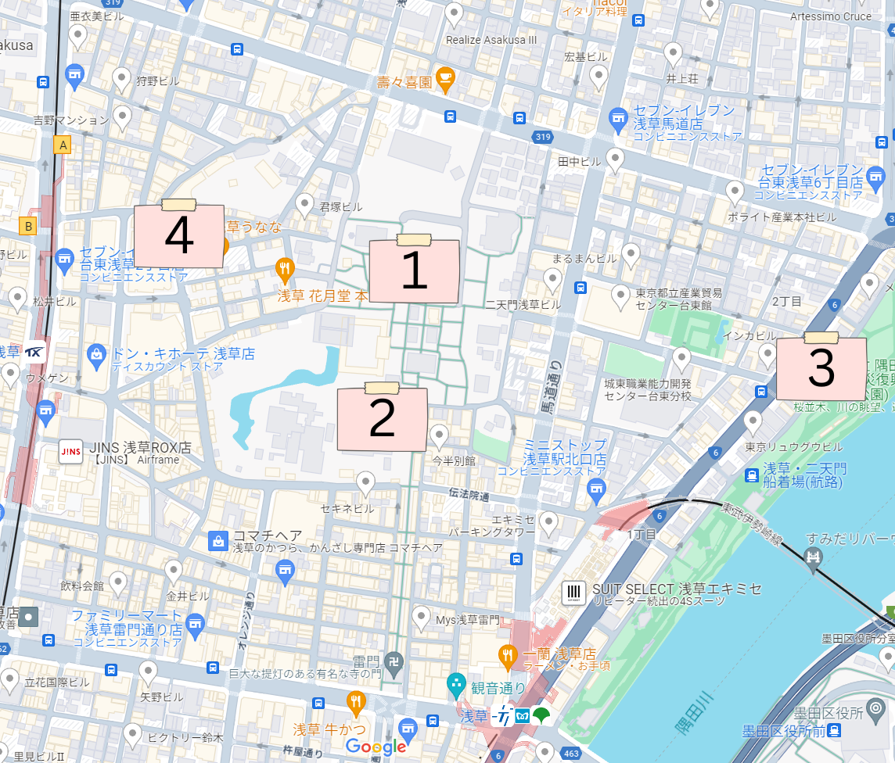
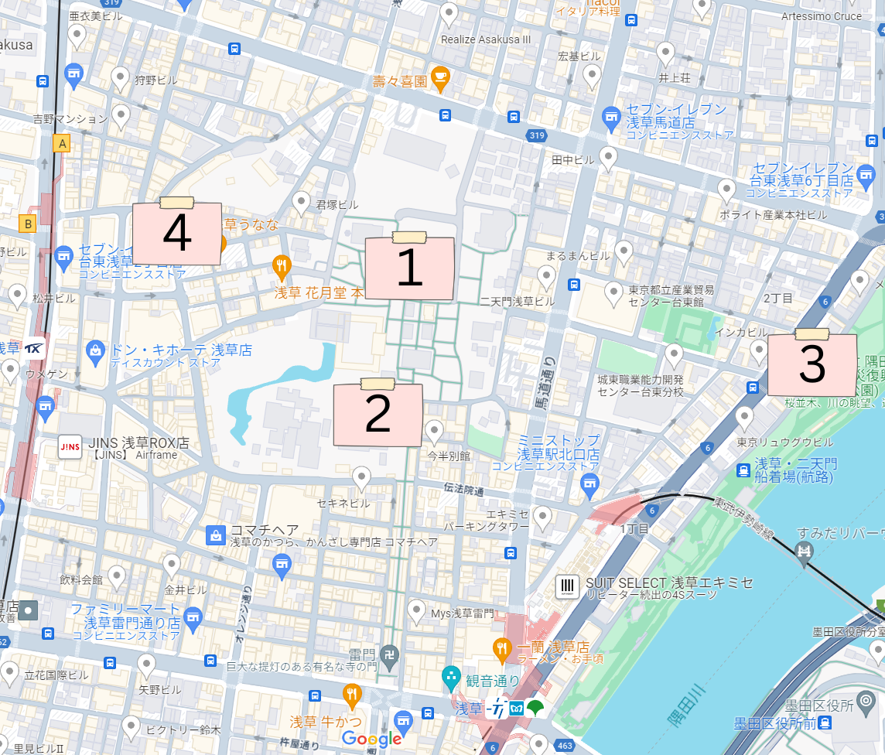
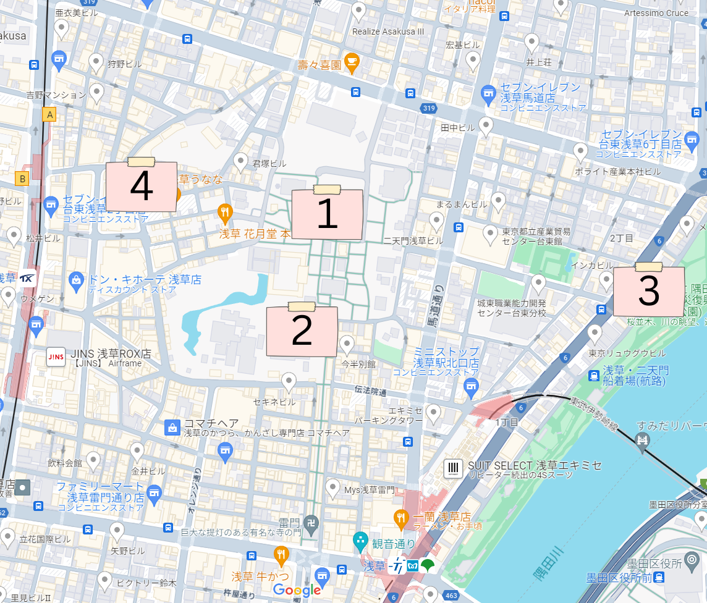
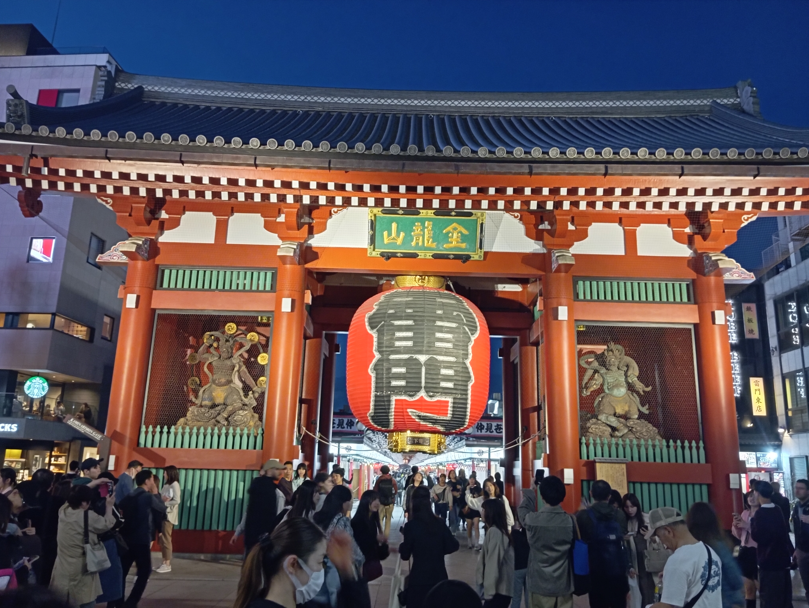
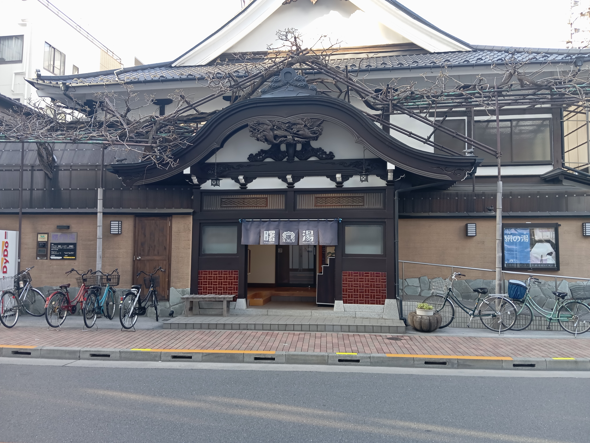
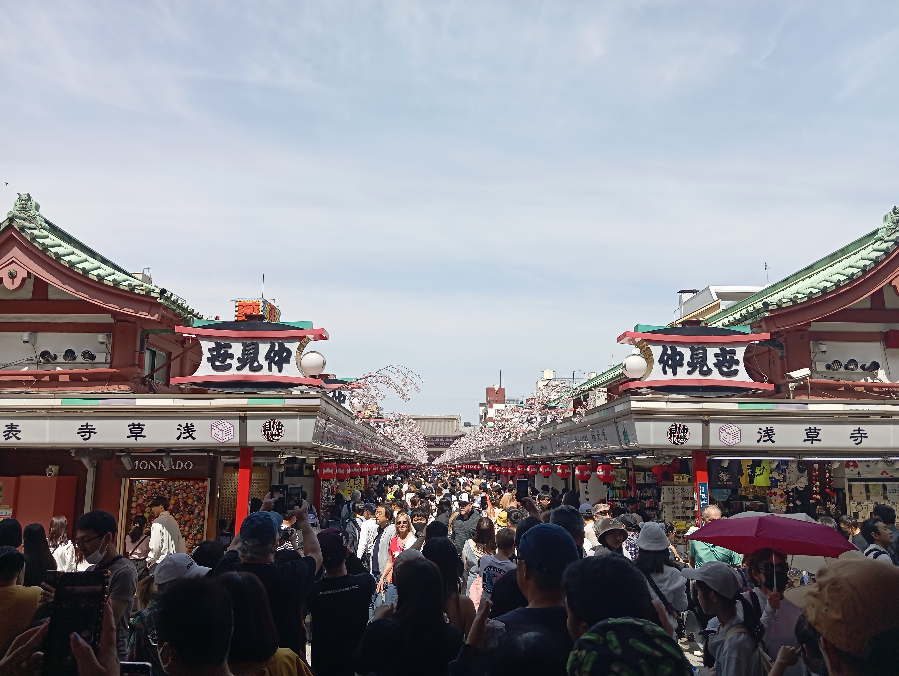
浅草は東京の伝統的な文化と歴史が息づく街であり、古い神社や寺院、賑やかな商店街など、魅力的な観光スポットがたくさんあります。
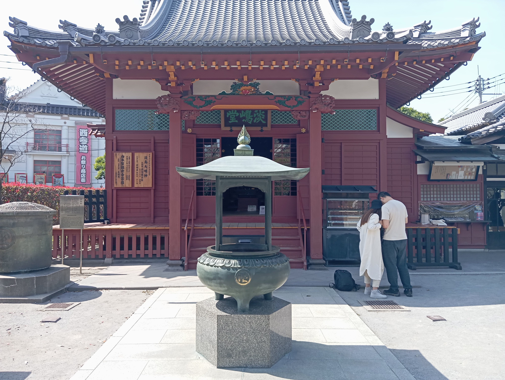
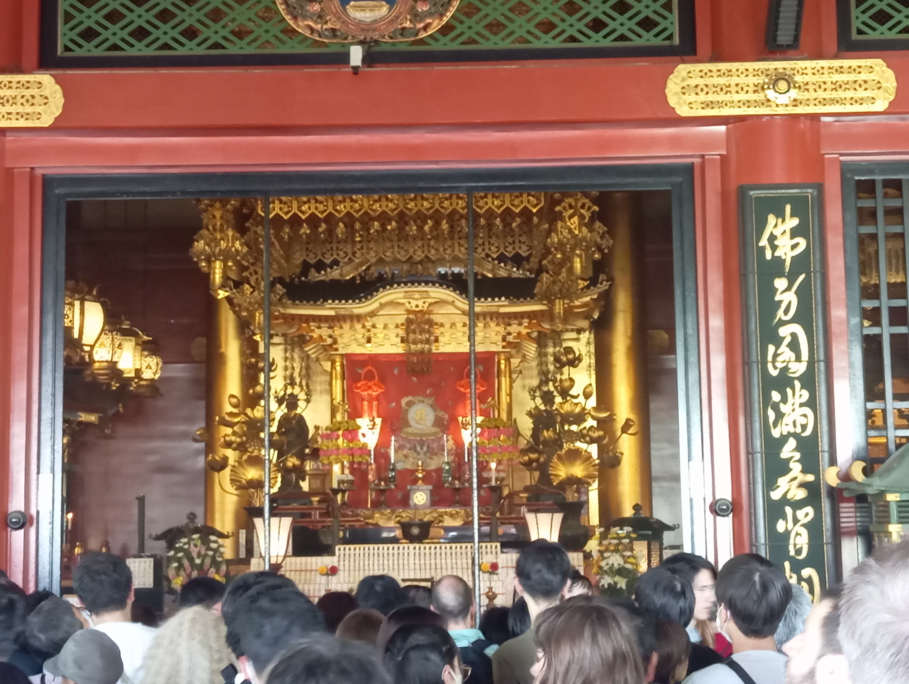
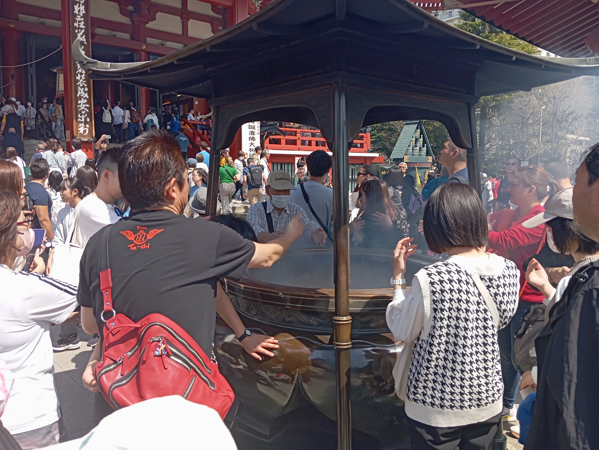
1. 浅草寺
浅草寺は、真言宗の寺院です。浅草寺は、聖観音菩薩を本尊とする寺院でいます。浅草寺は、東京で最も古い寺院の一つであります。
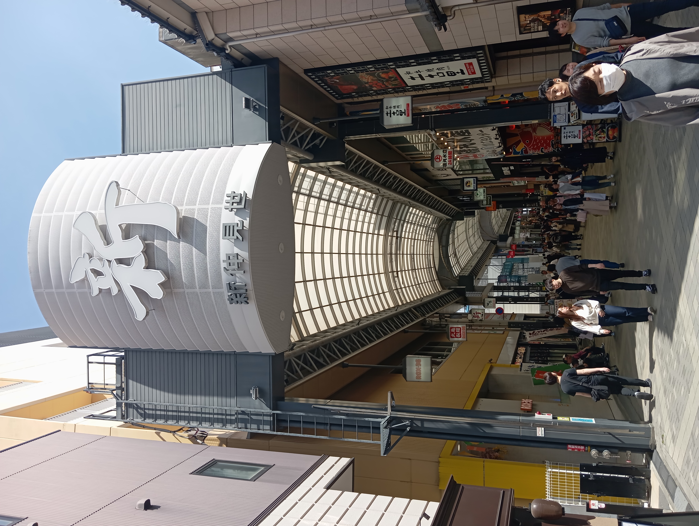
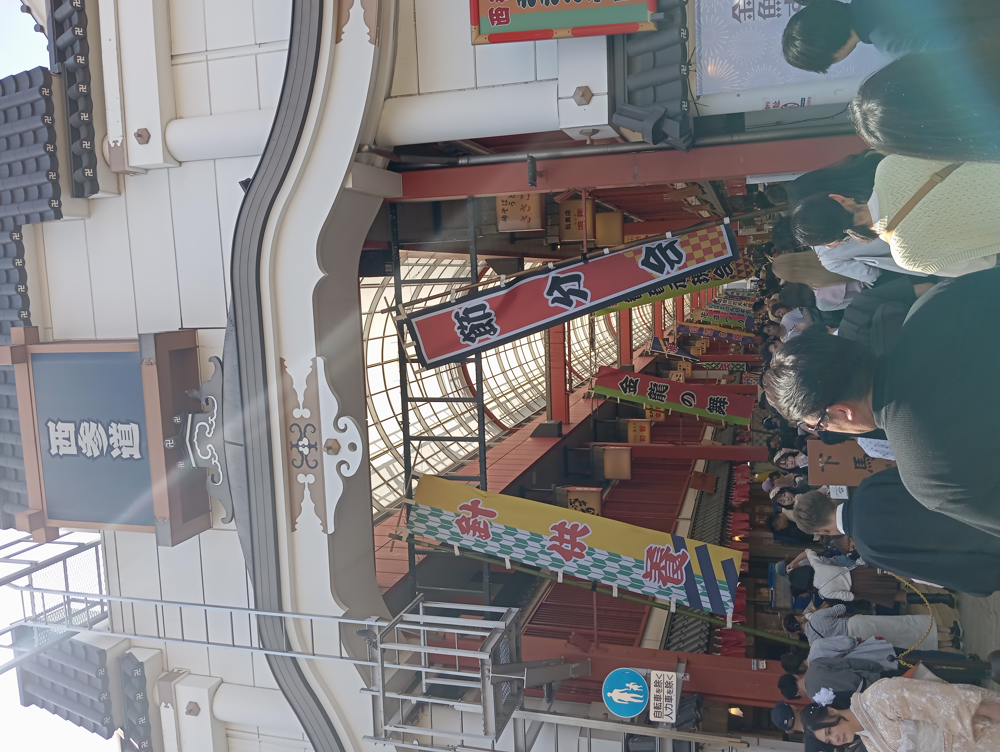
2. 仲見世、西参道、新仲見世
仲見世や西参道や新仲見世は商店街です。仲見世には、、和菓子、伝統工芸品、お土産など様々な商品が販売されています。仲見世は、浅草寺を訪れた際には必ず立ち寄りたい場所です。
3. 桜の広場
桜の名所として有名な広場です。 春には桜が咲き、ピクニックや道行く人々で賑わいます。
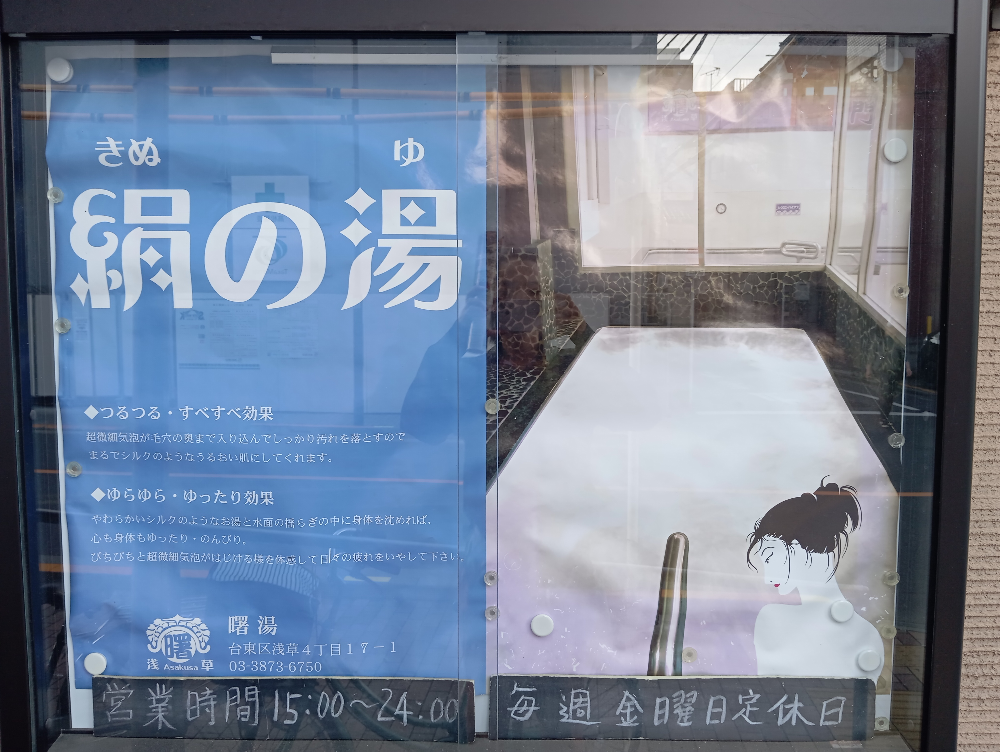
4. 曙湯
創業は昭和24年。脱衣室内の高い空間とそこに描かれている花の画は歴史を感じさせてくれます。お風呂に入ると、疲れはほとんどなくなり、とてもリラックスして心地よい気分になりました。